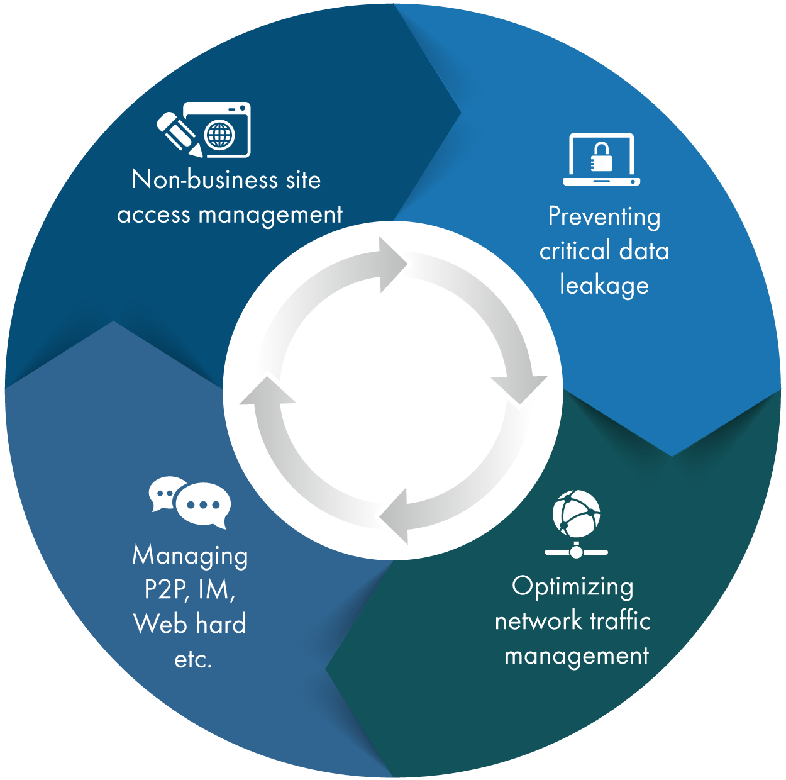

- Development of high-speed core network implemention through combination of PETA-BIT router and WDM in accordance with the tendency that exchange transmission technology is transferred to ultra- capacity WDM
- As various solutions of ACCESS unit are being diversified and new technologies for offering low-cost and high-speed ACCESS service are emerging, various types of solutions are provided
HOME < About Business < Solution Portfolio
Solution Portfolio

Internet Core / Access Network Solution
The solution business for establishing Internet infrastructure of service provider for service and basic access network for user access based on the infrastructure
Market environment and requirements
Key Services and Features
- Essential communication infrastructure solution for internet connection
- Effective data traffic transmission, management of different protocols, establishment and management of optimum path to transmit information in communication network
- Effectively connect large user networks in LAN and WAN environments
Apply to
- Large / small / medium size ISP (KT, LG Dacom, SK Telecom, Sejong Telecom etc.)
- Enterprise Network (KT & G, Jeju Air, Sharing Lotto, Yonsei Central Church, etc.)
- Public, Finance, Portal Network (NHN, Road Corporation, Land Corporation, Wonkwang University, etc.)
Applied Solutions
- Network evolution project using high-density and high-performance data core equipment to accommodate large-capacity traffic
- Implemention of next generation network using PETA-Bit router / switch
- Design and establishment Internet access network for ISP and Enterprises to meet various internet access environments such as ATM, IP, XDSL, PSDN, and Metro Ethernet
Advanced Core / Access Network Business
- Transmission network replacement project based on optical cable
- DWDM solution and broadcast transmission solution
- IP + Transport Solution (Optical Switch)
Optical Transmission Enhancement Business
Internet Infra Value Added Service
The Internet infrastructure value added service builds a new type of access network and provides services by adding a solution specific to the existing access network to the end user based on the infrastructure.
Key Services and Features
- Provide new function of SOLUTION to complement defects of existing ACCESS network (ISDN, PSTN, xDSL)
- With growing demand for security and QoS in companies that have completed infrastructure construction, new ACCESS network with security and QoS is implemented.
Applied Solutions
- Construction of CDN (Contents Delivery Network)
- Providing LOAD-BALANCING and BACKUP SOLUTION - Activation of IDC center
- Construction of VPN (Virtual Private Network)
- Establish NETWORK in the company using internet and provide DATA encryption and QoS
- Services that enhance corporate security through SOLUTION
Apply to
- Large / small and medium size ISP (KT, LG Dacom, SK Telecom, Sejong Telecom etc.)
- Enterprise Network (KT & G, Jeju Air, Nanum Lotto, Yonsei Central Church, etc.)
- Public, Finance, Portal Network (NHN, Road Corporation, Land Corporation, Wonkwang University, etc.)
Mobile Internet Service
Business to provide Internet service to mobile users using wireless technology
Key Services and Features
- Providing solutions for LTE, WCDMA, HSDPA (Internet mobile phone) network connection
- Providing solutions for 5G network connection
- Providing wireless IP network building solution
Applied Solutions
- Construction of Wireless Network
Solution to improve mobility and business accessibility by converting Local Area Network in enterprise network to wireless LAN environment
- Construction of Next Generation Wireless Infra
Providing optimized solution for next generation wireless infrastructure such as 5G and 5G Ultra-Dense Network
Apply to
- Large/ small and medium size ISP (KT, LG Dacom, SK Telecom, etc.)
- Enterprise Network
- Public, Finance, Portal Network
Storage Solution
As data usage increases in all areas of IT such as iSP / NSP / Portal, solutions that introduce large-scale storage devices and provide management solutions
Key service and feature
- Storage Solution
- Data storage system for various environments
- High-end scalability from 1TB to 500PB
- Cache partition function
- Various kinds of RAID level support
- High-end solutions such as True Copy and Shadow-Image
- SAN Switch Solution
- Connect servers and storage devices to Fiber Channel
- Build a highly scalable, core-to-edge storage networking infrastructure
- Configuration from 8 ports to 192 ports
Applied Solutions
- SERVER FARM Solution
- Data backup center (Disaster Recovery) Solution
- Large Capacity Backup Solution
Apply to
- Samsung Electronics, Auction, Hyundai Motor
- KTF, KT
Internet Application
Solutions utilizing existing and new technology applications such as WEB-Cache, WEB acceleration, and video system with existing Internet infrastructure
Key Services and Features
- Web acceleration, WAN acceleration, Cache
- Application Compression
- Web Mail, massive massaging
- Video Meeting system
- L7 Layer (Application) Control
Apply to
- SK Telecom, KT, SK Infosec
- Yonsei University, Nanum Lotto
- Hyundai Cement, KT & G
Integrated Security Service for Internet
Providing enterprise and service provider with total solution related to service and system security.
Key service and feature
- Block unauthorized external access
- Firewall
- Anti-Virus
- Block DDoS Attack
- VPN, SSL-VPN, Lan-to-Lan VPN
- Web Firewall
- Monitor and block abnormal traffic
- PKI Solution
Applied Solutions
- Network attack Protection solution
A solution that blocks and monitors malicious attacks such as virus, DDos attacks, Broadcast Storms, and Abnormal Traffic that may occur in the network.
- Application Intrusion Protection Solution
A solution that prevents invasion of malicious Hacker approach to financial, securities, public institution and enterprise applications
Apply to
- SK Telecom, KT, SK Infosec
- Yonsei University, Nanum Lotto
- Hyundai Cement, KT & G
Voice Data Integration Service
The voice / data integration service business is a service related to the combination of the voice service using the Internet network and the general voice network, and a business that is gradually integrated into Voice over Broadband.
Market environment and requirements
- As economics of network operation increases, the combined demand for switching network, access network, data network, and high-speed optical communication network increases together
- Ultimately expected to be integrated into IP over any network (IP telephony / data network)
Key service and feature
- IP framed Voice over Internet
- By integrating the different network interfaces of voice and data, to build an IP-based integrated infrastructure
- All the things, that can be done in the existing PSTN network (telephony network), are transferred to packet (data network), VoIP, IP PBX, Softswitch, IP-Phone
Apply to
- Large / small ISP (KT BcN, Premium Network),
- Enterprise Network
- Public, Finance, Portal Network
Traffic Management System
A solution that artificially controls and manages traffic to effectively and economically operate Internet resources (communication equipment, lines and traffic volume)
Market environment and requirements

- Internet file sharing service control / blocking (P2P)
- Controlling / blocking non-business sites services
- Preventing messenger web hard, important data leakage and protecting
- Blocking foreign illegal information sites
- Network monitoring and analysis service
Apply to
- KT, HT, SK Networks, Dreamline, Sejong Telecom
- Each provincial office of education (Daegu, Busan, Jeonnam, etc.)
- Samsung Electronics, LG Electronics Institute, GS Home Shopping
Consulting Service
Based on the consulting methodology of the client network system, analyze all the current status of the configuration resources and work flow, and ultimately present the implementation plan optimized for all current and future business environments.
BlockChain Service
Analyzing the details of individual task and data attributes in the environment of centrally managed work / service process or data collection / management. Building decentralized data storage, processing and management environment to facilitate efficient and effective operation by distinguishing importance of security maintenance and characteristics of falsification
Market environment and requirements
- De-centralized system (platform) construction
- Consulting of Business services and data analysis
- Design and construction of ICO (Initial Coin Offering)
- Apply block chain to public, financial, certification, platform, enterprise service
Apply to
- Public sector that seeks to improve work efficiency by opening data
- Financial companies seeking to enhance service through safe maintenance and management of transaction ledger records
- Enterprises seeking to enhance efficiency of service operation by data distribution storage management
Block Chain Service Structure (Example)
Block Chain Service Structure (Example)
Software Defined Network, SDN
According to the generalization of cloud environment, implementing network with overlay SDN which is realized through software without replacing existing L2 / L3 switches for virtual server operated in server virtualization zone and with hop-by-hop SDN which is realized selectively through white box L2 / L3 switches without dedicated OS or L2 / L3 switches with open flow protocol communicating each other by separating data transfer and control
Key Services and Features
- Separate operation of core functions of network and controller based on economic and operational efficiency
- Enhancement of centralized control of geographically distributed network equipment
- Immediate response to the communication mobility between applications distributed across multiple virtual machines (VMs)
- Automated orchestration of data center components-servers, storage, and networks
- Apply predefined script-based library profiles(templates)
Apply to
- Operator of any service provider that requires variable structure / bandwidth adjustment
- Providers of service infrastructure(cloud) distributed globally or regionally
- Service providers with various and frequent service release and termination
- General companies and schools that require flexible policy enforcement on infrastructure
Software Defined Network Structure (Example)
Artificial Intelligence, A.I.
Based on the data collected from service and infrastructure nodes, constructed a big data environment. Analyze the extracted data according to time, climate, population, traffic change, etc. Artificial Intelligence is applied to extract high-value-added information and to enable automatic response to anomalous phenomena.
Key Services and Features
- Automatic data collection engine, document classification algorithm, search clustering
- Big data processing infrastructure based on InfiniBand technology
- Offload central processing unit via remote direct memory access (RDMA)
- Automatic detection and notification of unusual security threats
- Automatically respond to distributed denial of service attacks (DDoS)
Apply to
- Any service providers that requires variable structure / bandwidth adjustment
- Global or regional distribution of service infrastructure (cloud) providers
- Service providers that repeatedly launch and terminate various and frequent services
- General companies and schools that require flexible policy enforcement on infrastructure
Artificial Intelligence Service Structure (Example)